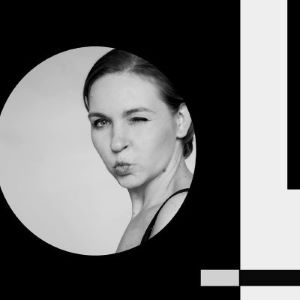

Je suis une ancienne étudiante de Universite Paris Sorbonne et doplomée d'un Master 2 Arts Plastique Nouveau Médias de Universite Paris VIII.
J'aime réaliser des portraits. Mes modèles sont mes proches, des inconnus... Après la prise de vue, il m'arrive d'ajouter un commentaire photographique, une image, une sensation qui m'aura été transmise par le modèle "le non dit" entre les flash...
J'ai réalisé plusieurs collaborations avec des mannequins débutants et des make up artistes.
Récemment j'ai travaillé pour la nouvelle marque des vêtements ecologiques:
En parallèlle de mes démarches, je suis en partenariat avec M2M Photo. Un studio photo spécialisé dans la photgraphie et la vidéo de mariage.
